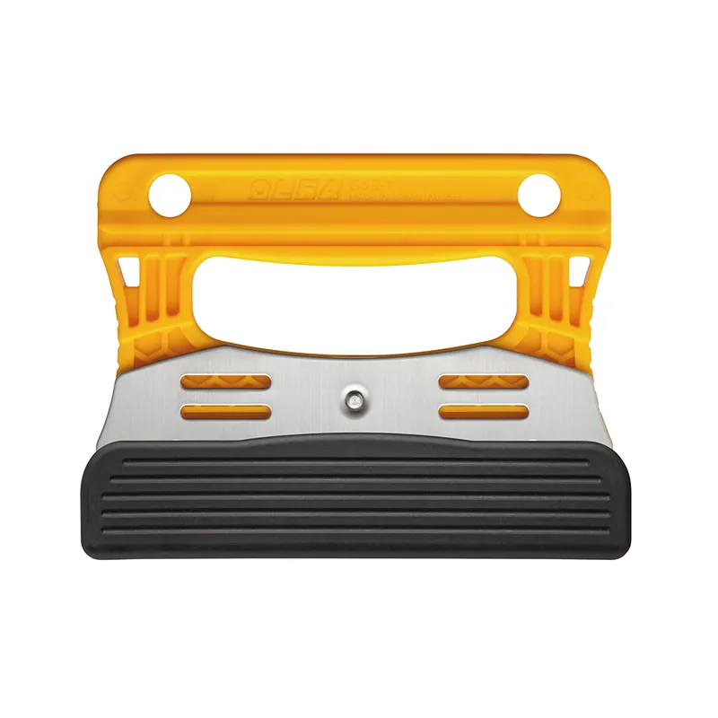

Raspador de Vidrios 120 mm.
De 120 mm. con hoja flexible de acero inoxidable, ideal para cortes precisos en superficies lisas.
CódigoGSR-1/3B
LíneaRaspadores
Medida de la hoja120 mm
Edad recomendada18 años o más
¿Lo necesitas para tu empresa?
Se entregan valores mediante cotización.
Descripción
- Cuchillo raspador GSR-1 120 mm.
- Mango tipo manopla con recovecos, diseñado para un agarre firme en trabajos con líquidos o superficies húmedas.
- Hoja de acero inoxidable flexible de 0,25 mm., perfecta para cortes limpios y sin esfuerzo.
- Un lado con filo, proporcionando mayor precisión en el raspado de superficies.
- Ideal para eliminar residuos sin dañar la superficie, perfecto para vidrios, gráficas y materiales lisos.
- Incluye caja protectora de filos con 3 repuestos GSB-1S, asegurando mayor durabilidad.
- Incluye tapa protectora para el filo, ofreciendo seguridad y mejor conservación.
- Resistente a la acetona, ideal para trabajos industriales.
- Apto para diestros y zurdos, garantizando un manejo cómodo y preciso.
Ficha técnica
| Código | GSR-1/3B |
|---|---|
| Línea | Raspadores |
| Medida de la hoja | 120 mm |
| Material del mango | Tipo manopla con recovecos |
| Hoja | Acero inoxidable flexible de 0,25 mm |
| Uso | Diestros y zurdos |
| Resistencia química | Acetona |
| Edad recomendada | 18 años o más |
| Hojas de repuesto | GSB-1S |
Datos referenciales del producto.